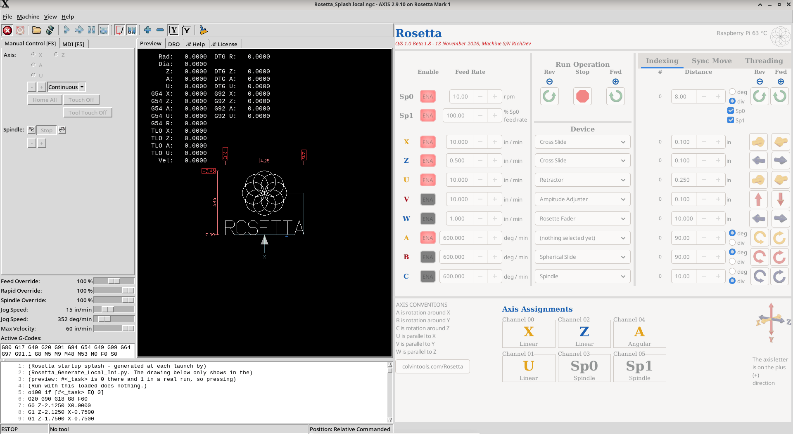

Axes Colors
| Color | Axis | Movement Control | |||||
| Neg | Pos | Neg | Pos | ||||
| Yellow | X | U | A | 
| 
| 
| |
| Red | V | B | 
| 
| 
| ||
| Blue | Z | W | C | 
| 
| ||
| Black | Spindles (Sp0 & Sp1) | 
| 
| ||||
On this page, the axis letters are colored to assist the user. (Note: LinuxCNC does not allow for a Y axis when running as a lathe.)
Every axis has a row of controls on the user screens, but only the axes selected for use can be operated - the others are grayed out. For example, in the screen shown below, the user has selected to use the X, Z, U, V, W, and C axes, so the A and B rows are grayed out.
The table at the bottom of the user screen titled, Axis Assignments, shows the current axis assignments. It is updated the next time Rosetta is started after the selected axes are changed.
|
|
At Startup
When the Rosetta system is started, the screen shown below will be displayed. At this point, the LinuxCNC system is still in an "Estop" and "off" state.
|  System at startup (Base Box) |
After
the same screen will no longer be grayed out, and will be as shown below.
Note: This state can be also encountered if an error is encountered.
|
|
After Startup
After
the screen below will be shown.
| System after startup (Base Box with Expansion Box) |
For the panel on the right side of the screen, all the axes which Rosetta supports are shown. The axes which are not assigned to a channel using the Rosetta Settings are grayed out.
The controls on this panel to the right are outlined below.
Raspberry Pi Temperature
There is a Raspberry Pi inside the Rosetta system. This is a small computer inside the Base Box that is used to run Rosetta.
At the top right of the panel, beside the Rosetta logo, is the temperature of the Raspberry Pi (for example, Raspberry Pi 66 °C). This displayed text changes colors if the Raspberry Pi’s temperature rises too high.
- Orange - the Raspberry Pi is warm (at or above the Warning temperature). Rosetta also shows a notice in the bottom right corner of its window.
- Red - the Raspberry Pi is too hot (at or above the Alarm temperature). A message box appears and an alarm sounds on the speaker.
There is also an indicator if the Raspberry Pi’s supply voltage is not where either should be.
- ⚡ - the power supply isn't keeping up (undervoltage). There will also be a notice.
Nothing is stopped by any of these.
The temperature ranges used for alerting the user, and whether the alarm sounds, are set on the Other page of Rosetta Settings.
Should any of these conditions occur, see The Pi is warm or too hot.
ENA
These buttons are used to enable or disable an axis.
- When red, the axis is disabled.
- When green, the axis is enabled.
- When gray, the axis is not configured for use.
If you click an index, Sync Move or Cut Thread button which would move using an axis or spindle which is not enabled, one of two things will happen
| Axis Not Enabled Setting | What Happens |
| Ask |
a pop-up box names the axes which are not enabled, and offers two buttons:
|
| Enable it automatically |
The ENA buttons are turned on with no box, and Rosetta carries on. For a Gcode program, a short note in the bottom right corner of the LinuxCNC window says which axes were enabled. |
Axis Not Enabled is set on Settings - Other.
Feed Rate
Used to set the feed rate (speed) for movements on this page. The unit of measure (UOM) for that speed is shown on the screen.
These feed rates are not used on the Manual Control / Jogging (F3) nor the MDI Tab (F5).
The UOM shown, and used by the system, is based on the Measurement System selection.
Run Operation
These 3 buttons are used for running the spindles.
|
| Starts the spindle(s) running in the negative direction. It will continue running in this direction until stopped. |
| Stops the spindle(s) from running. | |
|
| Starts the spindle(s) running in the positive direction. It will continue running in this direction until stopped. |
Notes for the Sp1 spindle (rosette phaser/multiplier):
- The feed rate for the Sp1 spindle is a percentage of the Sp0 spindle's speed. At 100%, they run the same speed.
- This feed rate can be set anywhere in the range of +1,000% to -1,000%.
- If the feed rate is set to 0, the Sp1 will not run.
- If the Sp1 spindle is disabled, it will not run.
Device
This allows the user to denote the use of the non-spindle axes. The values shown are in the Device Names list on Settings - Other.